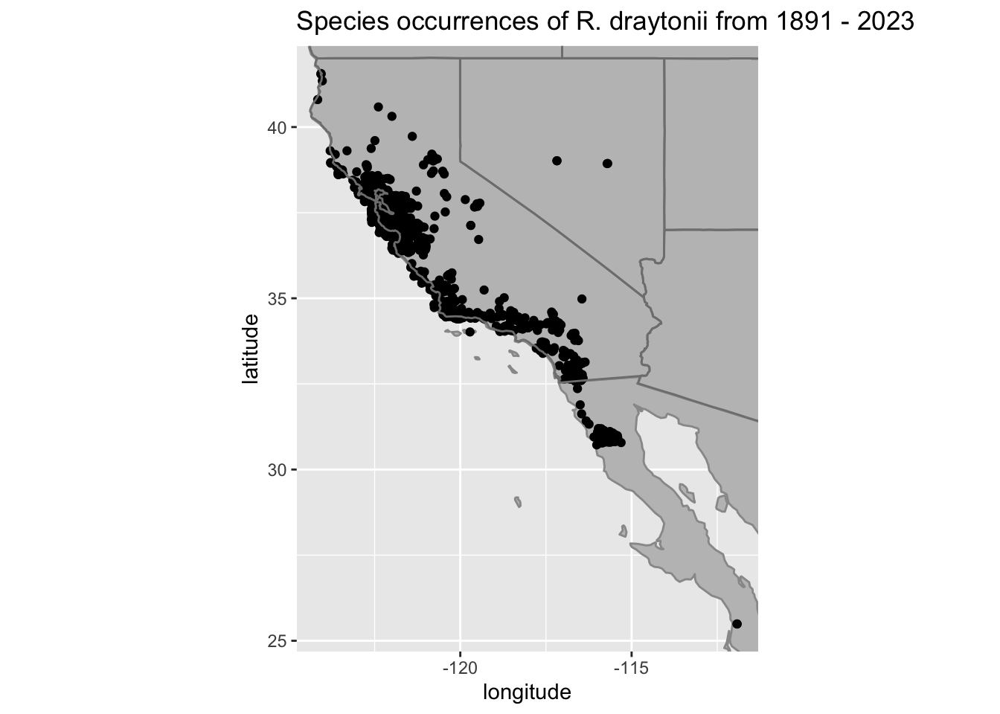

<!DOCTYPE html>
<html xmlns="http://www.w3.org/1999/xhtml" lang="en" xml:lang="en"><head>

<meta charset="utf-8">
<meta name="generator" content="quarto-1.2.335">

<meta name="viewport" content="width=device-width, initial-scale=1.0, user-scalable=yes">


<title>occ_map</title>
<style>
code{white-space: pre-wrap;}
span.smallcaps{font-variant: small-caps;}
div.columns{display: flex; gap: min(4vw, 1.5em);}
div.column{flex: auto; overflow-x: auto;}
div.hanging-indent{margin-left: 1.5em; text-indent: -1.5em;}
ul.task-list{list-style: none;}
ul.task-list li input[type="checkbox"] {
  width: 0.8em;
  margin: 0 0.8em 0.2em -1.6em;
  vertical-align: middle;
}
pre > code.sourceCode { white-space: pre; position: relative; }
pre > code.sourceCode > span { display: inline-block; line-height: 1.25; }
pre > code.sourceCode > span:empty { height: 1.2em; }
.sourceCode { overflow: visible; }
code.sourceCode > span { color: inherit; text-decoration: inherit; }
div.sourceCode { margin: 1em 0; }
pre.sourceCode { margin: 0; }
@media screen {
div.sourceCode { overflow: auto; }
}
@media print {
pre > code.sourceCode { white-space: pre-wrap; }
pre > code.sourceCode > span { text-indent: -5em; padding-left: 5em; }
}
pre.numberSource code
  { counter-reset: source-line 0; }
pre.numberSource code > span
  { position: relative; left: -4em; counter-increment: source-line; }
pre.numberSource code > span > a:first-child::before
  { content: counter(source-line);
    position: relative; left: -1em; text-align: right; vertical-align: baseline;
    border: none; display: inline-block;
    -webkit-touch-callout: none; -webkit-user-select: none;
    -khtml-user-select: none; -moz-user-select: none;
    -ms-user-select: none; user-select: none;
    padding: 0 4px; width: 4em;
    color: #aaaaaa;
  }
pre.numberSource { margin-left: 3em; border-left: 1px solid #aaaaaa;  padding-left: 4px; }
div.sourceCode
  {   }
@media screen {
pre > code.sourceCode > span > a:first-child::before { text-decoration: underline; }
}
code span.al { color: #ff0000; font-weight: bold; } /* Alert */
code span.an { color: #60a0b0; font-weight: bold; font-style: italic; } /* Annotation */
code span.at { color: #7d9029; } /* Attribute */
code span.bn { color: #40a070; } /* BaseN */
code span.bu { color: #008000; } /* BuiltIn */
code span.cf { color: #007020; font-weight: bold; } /* ControlFlow */
code span.ch { color: #4070a0; } /* Char */
code span.cn { color: #880000; } /* Constant */
code span.co { color: #60a0b0; font-style: italic; } /* Comment */
code span.cv { color: #60a0b0; font-weight: bold; font-style: italic; } /* CommentVar */
code span.do { color: #ba2121; font-style: italic; } /* Documentation */
code span.dt { color: #902000; } /* DataType */
code span.dv { color: #40a070; } /* DecVal */
code span.er { color: #ff0000; font-weight: bold; } /* Error */
code span.ex { } /* Extension */
code span.fl { color: #40a070; } /* Float */
code span.fu { color: #06287e; } /* Function */
code span.im { color: #008000; font-weight: bold; } /* Import */
code span.in { color: #60a0b0; font-weight: bold; font-style: italic; } /* Information */
code span.kw { color: #007020; font-weight: bold; } /* Keyword */
code span.op { color: #666666; } /* Operator */
code span.ot { color: #007020; } /* Other */
code span.pp { color: #bc7a00; } /* Preprocessor */
code span.sc { color: #4070a0; } /* SpecialChar */
code span.ss { color: #bb6688; } /* SpecialString */
code span.st { color: #4070a0; } /* String */
code span.va { color: #19177c; } /* Variable */
code span.vs { color: #4070a0; } /* VerbatimString */
code span.wa { color: #60a0b0; font-weight: bold; font-style: italic; } /* Warning */
</style>


<script src="../site_libs/quarto-nav/quarto-nav.js"></script>
<script src="../site_libs/quarto-nav/headroom.min.js"></script>
<script src="../site_libs/clipboard/clipboard.min.js"></script>
<script src="../site_libs/quarto-search/autocomplete.umd.js"></script>
<script src="../site_libs/quarto-search/fuse.min.js"></script>
<script src="../site_libs/quarto-search/quarto-search.js"></script>
<meta name="quarto:offset" content="../">
<script src="../site_libs/quarto-html/quarto.js"></script>
<script src="../site_libs/quarto-html/popper.min.js"></script>
<script src="../site_libs/quarto-html/tippy.umd.min.js"></script>
<script src="../site_libs/quarto-html/anchor.min.js"></script>
<link href="../site_libs/quarto-html/tippy.css" rel="stylesheet">
<link href="../site_libs/quarto-html/quarto-syntax-highlighting.css" rel="stylesheet" id="quarto-text-highlighting-styles">
<script src="../site_libs/bootstrap/bootstrap.min.js"></script>
<link href="../site_libs/bootstrap/bootstrap-icons.css" rel="stylesheet">
<link href="../site_libs/bootstrap/bootstrap.min.css" rel="stylesheet" id="quarto-bootstrap" data-mode="light">
<script id="quarto-search-options" type="application/json">{
  "location": "sidebar",
  "copy-button": false,
  "collapse-after": 3,
  "panel-placement": "start",
  "type": "textbox",
  "limit": 20,
  "language": {
    "search-no-results-text": "No results",
    "search-matching-documents-text": "matching documents",
    "search-copy-link-title": "Copy link to search",
    "search-hide-matches-text": "Hide additional matches",
    "search-more-match-text": "more match in this document",
    "search-more-matches-text": "more matches in this document",
    "search-clear-button-title": "Clear",
    "search-detached-cancel-button-title": "Cancel",
    "search-submit-button-title": "Submit"
  }
}</script>


<link rel="stylesheet" href="../styles.css">
</head>

<body class="nav-sidebar docked">

<div id="quarto-search-results"></div>
  <header id="quarto-header" class="headroom fixed-top">
  <nav class="quarto-secondary-nav" data-bs-toggle="collapse" data-bs-target="#quarto-sidebar" aria-controls="quarto-sidebar" aria-expanded="false" aria-label="Toggle sidebar navigation" onclick="if (window.quartoToggleHeadroom) { window.quartoToggleHeadroom(); }">
    <div class="container-fluid d-flex justify-content-between">
      <h1 class="quarto-secondary-nav-title"></h1>
      <button type="button" class="quarto-btn-toggle btn" aria-label="Show secondary navigation">
        <i class="bi bi-chevron-right"></i>
      </button>
    </div>
  </nav>
</header>
<!-- content -->
<div id="quarto-content" class="quarto-container page-columns page-rows-contents page-layout-article">
<!-- sidebar -->
  <nav id="quarto-sidebar" class="sidebar collapse sidebar-navigation docked overflow-auto">
    <div class="pt-lg-2 mt-2 text-left sidebar-header">
      <a href="../index.html" class="sidebar-logo-link">
      
      </a>
      </div>
      <div class="mt-2 flex-shrink-0 align-items-center">
        <div class="sidebar-search">
        <div id="quarto-search" class="" title="Search"></div>
        </div>
      </div>
    <div class="sidebar-menu-container"> 
    <ul class="list-unstyled mt-1">
        <li class="sidebar-item">
  <div class="sidebar-item-container"> 
  <a href="../home.html" class="sidebar-item-text sidebar-link">Home</a>
  </div>
</li>
        <li class="sidebar-item">
  <div class="sidebar-item-container"> 
  <a href="../our_team.html" class="sidebar-item-text sidebar-link">Our Team</a>
  </div>
</li>
        <li class="sidebar-item">
  <div class="sidebar-item-container"> 
  <a href="../contact_us.html" class="sidebar-item-text sidebar-link">Contact Us</a>
  </div>
</li>
        <li class="sidebar-item">
  <div class="sidebar-item-container"> 
  <a href="../syllabus.html" class="sidebar-item-text sidebar-link">Syllabus</a>
  </div>
</li>
        <li class="sidebar-item">
  <div class="sidebar-item-container"> 
  <a href="../schedule.html" class="sidebar-item-text sidebar-link">Class Schedule</a>
  </div>
</li>
        <li class="sidebar-item sidebar-item-section">
      <div class="sidebar-item-container"> 
            <a class="sidebar-item-text sidebar-link text-start collapsed" data-bs-toggle="collapse" data-bs-target="#quarto-sidebar-section-1" aria-expanded="false">Coding Boot Camp</a>
          <a class="sidebar-item-toggle text-start collapsed" data-bs-toggle="collapse" data-bs-target="#quarto-sidebar-section-1" aria-expanded="false">
            <i class="bi bi-chevron-right ms-2"></i>
          </a> 
      </div>
      <ul id="quarto-sidebar-section-1" class="collapse list-unstyled sidebar-section depth1 ">  
          <li class="sidebar-item">
  <div class="sidebar-item-container"> 
  <a href="../Bootcamp/coding_basics_for_this_course.html" class="sidebar-item-text sidebar-link">Coding Basics</a>
  </div>
</li>
          <li class="sidebar-item">
  <div class="sidebar-item-container"> 
  <a href="../Bootcamp/bootcamp_1.html" class="sidebar-item-text sidebar-link">Bootcamp Lesson 1</a>
  </div>
</li>
          <li class="sidebar-item">
  <div class="sidebar-item-container"> 
  <a href="../Bootcamp/bootcamp_2.html" class="sidebar-item-text sidebar-link">Bootcamp Lesson 2</a>
  </div>
</li>
          <li class="sidebar-item">
  <div class="sidebar-item-container"> 
  <a href="../Bootcamp/bootcamp_3.html" class="sidebar-item-text sidebar-link">Bootcamp Lesson 3</a>
  </div>
</li>
          <li class="sidebar-item">
  <div class="sidebar-item-container"> 
  <a href="../Bootcamp/bootcamp_practice_1.html" class="sidebar-item-text sidebar-link">Bootcamp Practices</a>
  </div>
</li>
      </ul>
  </li>
        <li class="sidebar-item sidebar-item-section">
      <div class="sidebar-item-container"> 
            <a class="sidebar-item-text sidebar-link text-start" data-bs-toggle="collapse" data-bs-target="#quarto-sidebar-section-2" aria-expanded="true">Lessons</a>
          <a class="sidebar-item-toggle text-start" data-bs-toggle="collapse" data-bs-target="#quarto-sidebar-section-2" aria-expanded="true">
            <i class="bi bi-chevron-right ms-2"></i>
          </a> 
      </div>
      <ul id="quarto-sidebar-section-2" class="collapse list-unstyled sidebar-section depth1 show">  
          <li class="sidebar-item">
  <div class="sidebar-item-container"> 
  <a href="../Lessons/lessons.html" class="sidebar-item-text sidebar-link">Lessons</a>
  </div>
</li>
          <li class="sidebar-item">
  <div class="sidebar-item-container"> 
  <a href="../Lessons/data_aquisition_cleaning.html" class="sidebar-item-text sidebar-link">Querying, cleaning, and mapping GBIF data</a>
  </div>
</li>
          <li class="sidebar-item">
  <div class="sidebar-item-container"> 
  <a href="../Lessons/occ_map.html" class="sidebar-item-text sidebar-link active">Occurrence Map</a>
  </div>
</li>
      </ul>
  </li>
        <li class="sidebar-item sidebar-item-section">
      <div class="sidebar-item-container"> 
            <a class="sidebar-item-text sidebar-link text-start collapsed" data-bs-toggle="collapse" data-bs-target="#quarto-sidebar-section-3" aria-expanded="false">Assignments</a>
          <a class="sidebar-item-toggle text-start collapsed" data-bs-toggle="collapse" data-bs-target="#quarto-sidebar-section-3" aria-expanded="false">
            <i class="bi bi-chevron-right ms-2"></i>
          </a> 
      </div>
      <ul id="quarto-sidebar-section-3" class="collapse list-unstyled sidebar-section depth1 ">  
          <li class="sidebar-item">
  <div class="sidebar-item-container"> 
  <a href="../Assignments/assignments.html" class="sidebar-item-text sidebar-link">Assignments</a>
  </div>
</li>
          <li class="sidebar-item">
  <div class="sidebar-item-container"> 
  <a href="../Assignments/HW_1.html" class="sidebar-item-text sidebar-link">HW 1: Data Science Tools</a>
  </div>
</li>
          <li class="sidebar-item">
  <div class="sidebar-item-container"> 
  <a href="../Assignments/HW_2_pt1.html" class="sidebar-item-text sidebar-link">HW 2 (Part 1): Informational Interview</a>
  </div>
</li>
          <li class="sidebar-item">
  <div class="sidebar-item-container"> 
  <a href="../Assignments/HW_2_pt2.html" class="sidebar-item-text sidebar-link">HW 2 (Part 2): Resume</a>
  </div>
</li>
          <li class="sidebar-item">
  <div class="sidebar-item-container"> 
  <a href="../Assignments/HW_3.html" class="sidebar-item-text sidebar-link">HW 3: Practice with GitHub</a>
  </div>
</li>
          <li class="sidebar-item">
  <div class="sidebar-item-container"> 
  <a href="../Assignments/HW_4.html" class="sidebar-item-text sidebar-link">HW 4: Occurrence Map</a>
  </div>
</li>
          <li class="sidebar-item">
  <div class="sidebar-item-container"> 
  <a href="../Assignments/HW_5.html" class="sidebar-item-text sidebar-link">HW 5: Natural History and Taxonomy</a>
  </div>
</li>
          <li class="sidebar-item">
  <div class="sidebar-item-container"> 
  <a href="../Assignments/HW_6.html" class="sidebar-item-text sidebar-link">HW 6: Current &amp; Future SDM</a>
  </div>
</li>
      </ul>
  </li>
        <li class="sidebar-item sidebar-item-section">
      <div class="sidebar-item-container"> 
            <a class="sidebar-item-text sidebar-link text-start collapsed" data-bs-toggle="collapse" data-bs-target="#quarto-sidebar-section-4" aria-expanded="false">Readings</a>
          <a class="sidebar-item-toggle text-start collapsed" data-bs-toggle="collapse" data-bs-target="#quarto-sidebar-section-4" aria-expanded="false">
            <i class="bi bi-chevron-right ms-2"></i>
          </a> 
      </div>
      <ul id="quarto-sidebar-section-4" class="collapse list-unstyled sidebar-section depth1 ">  
          <li class="sidebar-item">
  <div class="sidebar-item-container"> 
  <a href="../Readings/readings.html" class="sidebar-item-text sidebar-link">Readings</a>
  </div>
</li>
          <li class="sidebar-item">
  <div class="sidebar-item-container"> 
  <a href="../Readings/reading_1.html" class="sidebar-item-text sidebar-link">Week 1 Reading</a>
  </div>
</li>
          <li class="sidebar-item">
  <div class="sidebar-item-container"> 
  <a href="../Readings/reading_2.html" class="sidebar-item-text sidebar-link">Week 2 Readings</a>
  </div>
</li>
          <li class="sidebar-item">
  <div class="sidebar-item-container"> 
  <a href="../Readings/reading_3.html" class="sidebar-item-text sidebar-link">Week 3 Readings</a>
  </div>
</li>
          <li class="sidebar-item">
  <div class="sidebar-item-container"> 
  <a href="../Readings/reading_4.html" class="sidebar-item-text sidebar-link">Week 4 Readings</a>
  </div>
</li>
          <li class="sidebar-item">
  <div class="sidebar-item-container"> 
  <a href="../Readings/reading_5.html" class="sidebar-item-text sidebar-link">Week 5 Readings</a>
  </div>
</li>
      </ul>
  </li>
        <li class="sidebar-item sidebar-item-section">
      <div class="sidebar-item-container"> 
            <a class="sidebar-item-text sidebar-link text-start collapsed" data-bs-toggle="collapse" data-bs-target="#quarto-sidebar-section-5" aria-expanded="false">For Instructors</a>
          <a class="sidebar-item-toggle text-start collapsed" data-bs-toggle="collapse" data-bs-target="#quarto-sidebar-section-5" aria-expanded="false">
            <i class="bi bi-chevron-right ms-2"></i>
          </a> 
      </div>
      <ul id="quarto-sidebar-section-5" class="collapse list-unstyled sidebar-section depth1 ">  
          <li class="sidebar-item">
  <div class="sidebar-item-container"> 
  <a href="../For_Instructors/create_website.html" class="sidebar-item-text sidebar-link">Creating Website</a>
  </div>
</li>
          <li class="sidebar-item">
  <div class="sidebar-item-container"> 
  <a href="../For_Instructors/tips.html" class="sidebar-item-text sidebar-link">Tips</a>
  </div>
</li>
      </ul>
  </li>
    </ul>
    </div>
</nav>
<!-- margin-sidebar -->
    <div id="quarto-margin-sidebar" class="sidebar margin-sidebar">
        <nav id="TOC" role="doc-toc" class="toc-active">
    <h2 id="toc-title">On this page</h2>
   
  <ul>
  <li><a href="#occurrence-map" id="toc-occurrence-map" class="nav-link active" data-scroll-target="#occurrence-map">Occurrence Map</a>
  <ul class="collapse">
  <li><a href="#in-this-lesson-you-will-learn" id="toc-in-this-lesson-you-will-learn" class="nav-link" data-scroll-target="#in-this-lesson-you-will-learn">In this lesson, you will learn</a></li>
  <li><a href="#install-and-load-packages" id="toc-install-and-load-packages" class="nav-link" data-scroll-target="#install-and-load-packages">Install and load packages</a></li>
  <li><a href="#read-the-data" id="toc-read-the-data" class="nav-link" data-scroll-target="#read-the-data">Read the data</a></li>
  <li><a href="#setting-the-x-and-y-limits-of-our-map" id="toc-setting-the-x-and-y-limits-of-our-map" class="nav-link" data-scroll-target="#setting-the-x-and-y-limits-of-our-map">Setting the x and y limits of our map</a></li>
  <li><a href="#finding-the-date-range" id="toc-finding-the-date-range" class="nav-link" data-scroll-target="#finding-the-date-range">Finding the date range</a></li>
  <li><a href="#mapping" id="toc-mapping" class="nav-link" data-scroll-target="#mapping">Mapping</a></li>
  </ul></li>
  </ul>
</nav>
    </div>
<!-- main -->
<main class="content" id="quarto-document-content">


<section id="occurrence-map" class="level1">
<h1>Occurrence Map</h1>
<section id="in-this-lesson-you-will-learn" class="level3">
<h3 class="anchored" data-anchor-id="in-this-lesson-you-will-learn">In this lesson, you will learn</h3>
<ul>
<li>How to plot species occurrence data onto a world map</li>
</ul>
</section>
<section id="install-and-load-packages" class="level3">
<h3 class="anchored" data-anchor-id="install-and-load-packages">Install and load packages</h3>
<div class="cell">
<div class="sourceCode cell-code" id="cb1"><pre class="sourceCode r code-with-copy"><code class="sourceCode r"><span id="cb1-1"><a href="#cb1-1" aria-hidden="true" tabindex="-1"></a><span class="fu">install.packages</span>(<span class="st">"tidyverse"</span>, <span class="at">repos =</span> <span class="st">"http://cran.us.r-project.org"</span>) <span class="co">#includes ggplot</span></span></code><button title="Copy to Clipboard" class="code-copy-button"><i class="bi"></i></button></pre></div>
<div class="cell-output cell-output-stderr">
<pre><code>Installing package into '/Users/ameliapruiett/Library/R/x86_64/4.2/library'
(as 'lib' is unspecified)</code></pre>
</div>
<div class="cell-output cell-output-stdout">
<pre><code>
The downloaded binary packages are in
    /var/folders/jw/09h6w34n55534tfy1wjbhrwr7h160v/T//RtmpA3RQrl/downloaded_packages</code></pre>
</div>
</div>
<div class="cell">
<div class="sourceCode cell-code" id="cb4"><pre class="sourceCode r code-with-copy"><code class="sourceCode r"><span id="cb4-1"><a href="#cb4-1" aria-hidden="true" tabindex="-1"></a><span class="fu">library</span>(tidyverse)</span></code><button title="Copy to Clipboard" class="code-copy-button"><i class="bi"></i></button></pre></div>
<div class="cell-output cell-output-stderr">
<pre><code>── Attaching core tidyverse packages ──────────────────────── tidyverse 2.0.0 ──
✔ dplyr     1.1.0     ✔ readr     2.1.4
✔ forcats   1.0.0     ✔ stringr   1.5.0
✔ ggplot2   3.4.1     ✔ tibble    3.1.8
✔ lubridate 1.9.2     ✔ tidyr     1.3.0
✔ purrr     1.0.1     
── Conflicts ────────────────────────────────────────── tidyverse_conflicts() ──
✖ dplyr::filter() masks stats::filter()
✖ dplyr::lag()    masks stats::lag()
ℹ Use the ]8;;http://conflicted.r-lib.org/conflicted package]8;; to force all conflicts to become errors</code></pre>
</div>
</div>
</section>
<section id="read-the-data" class="level3">
<h3 class="anchored" data-anchor-id="read-the-data">Read the data</h3>
<div class="cell">
<div class="sourceCode cell-code" id="cb6"><pre class="sourceCode r code-with-copy"><code class="sourceCode r"><span id="cb6-1"><a href="#cb6-1" aria-hidden="true" tabindex="-1"></a>ranaData <span class="ot">&lt;-</span> <span class="fu">read_csv</span>(<span class="st">"ranaData.csv"</span>)</span></code><button title="Copy to Clipboard" class="code-copy-button"><i class="bi"></i></button></pre></div>
<div class="cell-output cell-output-stderr">
<pre><code>New names:
Rows: 1785 Columns: 4
── Column specification
──────────────────────────────────────────────────────── Delimiter: "," dbl
(3): ...1, longitude, latitude date (1): eventDate
ℹ Use `spec()` to retrieve the full column specification for this data. ℹ
Specify the column types or set `show_col_types = FALSE` to quiet this message.
• `` -&gt; `...1`</code></pre>
</div>
</div>
</section>
<section id="setting-the-x-and-y-limits-of-our-map" class="level3">
<h3 class="anchored" data-anchor-id="setting-the-x-and-y-limits-of-our-map">Setting the x and y limits of our map</h3>
<p>We want our map to be centered on where our occurrence data is found. To do this, we will create x and y limits based on the latitude (y) and longitude (x) values of our cleaned data.</p>
<div class="cell">
<div class="sourceCode cell-code" id="cb8"><pre class="sourceCode r code-with-copy"><code class="sourceCode r"><span id="cb8-1"><a href="#cb8-1" aria-hidden="true" tabindex="-1"></a>xmax <span class="ot">&lt;-</span> <span class="fu">max</span>(ranaData<span class="sc">$</span>longitude) </span>
<span id="cb8-2"><a href="#cb8-2" aria-hidden="true" tabindex="-1"></a>xmin <span class="ot">&lt;-</span> <span class="fu">min</span>(ranaData<span class="sc">$</span>longitude) </span>
<span id="cb8-3"><a href="#cb8-3" aria-hidden="true" tabindex="-1"></a>ymax <span class="ot">&lt;-</span> <span class="fu">max</span>(ranaData<span class="sc">$</span>latitude) </span>
<span id="cb8-4"><a href="#cb8-4" aria-hidden="true" tabindex="-1"></a>ymin <span class="ot">&lt;-</span> <span class="fu">min</span>(ranaData<span class="sc">$</span>latitude)</span></code><button title="Copy to Clipboard" class="code-copy-button"><i class="bi"></i></button></pre></div>
</div>
</section>
<section id="finding-the-date-range" class="level3">
<h3 class="anchored" data-anchor-id="finding-the-date-range">Finding the date range</h3>
<p>Since we didn’t specify the date range in our data acquisition call from GBIF, our species occurence data spans an unknown date range. It’s a good idea to include the date range in the title of the plot. We can use the range function.</p>
<div class="cell">
<div class="sourceCode cell-code" id="cb9"><pre class="sourceCode r code-with-copy"><code class="sourceCode r"><span id="cb9-1"><a href="#cb9-1" aria-hidden="true" tabindex="-1"></a><span class="fu">range</span>(<span class="fu">na.omit</span>(<span class="fu">as.Date</span>(ranaData<span class="sc">$</span>eventDate)))</span></code><button title="Copy to Clipboard" class="code-copy-button"><i class="bi"></i></button></pre></div>
<div class="cell-output cell-output-stdout">
<pre><code>[1] "1891-09-30" "2023-04-01"</code></pre>
</div>
<div class="sourceCode cell-code" id="cb11"><pre class="sourceCode r code-with-copy"><code class="sourceCode r"><span id="cb11-1"><a href="#cb11-1" aria-hidden="true" tabindex="-1"></a><span class="co"># our date identified ranges from 1891 to 2023</span></span></code><button title="Copy to Clipboard" class="code-copy-button"><i class="bi"></i></button></pre></div>
</div>
</section>
<section id="mapping" class="level3">
<h3 class="anchored" data-anchor-id="mapping">Mapping</h3>
<p>We will use ggplot2 to plot our data and style our map.</p>
<div class="cell">
<div class="sourceCode cell-code" id="cb12"><pre class="sourceCode r code-with-copy"><code class="sourceCode r"><span id="cb12-1"><a href="#cb12-1" aria-hidden="true" tabindex="-1"></a>wrld <span class="ot">&lt;-</span> ggplot2<span class="sc">::</span><span class="fu">map_data</span>(<span class="st">"world"</span>) <span class="co"># obtaining world borders</span></span>
<span id="cb12-2"><a href="#cb12-2" aria-hidden="true" tabindex="-1"></a></span>
<span id="cb12-3"><a href="#cb12-3" aria-hidden="true" tabindex="-1"></a><span class="fu">ggplot</span>() <span class="sc">+</span> <span class="co"># call ggplot</span></span>
<span id="cb12-4"><a href="#cb12-4" aria-hidden="true" tabindex="-1"></a><span class="fu">geom_polygon</span>(<span class="at">data =</span> wrld, <span class="at">mapping =</span> <span class="fu">aes</span>(<span class="at">x=</span>long, <span class="at">y=</span>lat, <span class="at">group=</span>group), <span class="at">fill=</span><span class="st">"grey75"</span>, <span class="at">colour =</span> <span class="st">"grey60"</span>) <span class="sc">+</span> <span class="co"># add world shapes, which are polygons stored in the df wrld</span></span>
<span id="cb12-5"><a href="#cb12-5" aria-hidden="true" tabindex="-1"></a>                   <span class="co"># we can specify the color, which is the border, and the fill, which is                      the inside of the shape</span></span>
<span id="cb12-6"><a href="#cb12-6" aria-hidden="true" tabindex="-1"></a>  <span class="fu">geom_point</span>(<span class="at">data =</span> ranaData, <span class="at">mapping=</span><span class="fu">aes</span>(<span class="at">x=</span>longitude, <span class="at">y=</span>latitude), <span class="at">show.legend=</span><span class="cn">FALSE</span>) <span class="sc">+</span> <span class="co"># our lat/long data are points on an x/y grid. We suppress the legend. </span></span>
<span id="cb12-7"><a href="#cb12-7" aria-hidden="true" tabindex="-1"></a>  <span class="fu">labs</span>(<span class="at">title=</span><span class="st">"Species occurrences of R. draytonii from 1891 - 2023"</span>, <span class="at">x=</span><span class="st">"longitude"</span>, <span class="at">y=</span><span class="st">"latitude"</span>) <span class="sc">+</span> <span class="co"># add labels to the graph</span></span>
<span id="cb12-8"><a href="#cb12-8" aria-hidden="true" tabindex="-1"></a>  <span class="fu">coord_fixed</span>(<span class="at">xlim =</span> <span class="fu">c</span>(xmin, xmax), <span class="at">ylim =</span> <span class="fu">c</span>(ymin, ymax)) <span class="sc">+</span> <span class="co"># give it our x and y limits to center the graph</span></span>
<span id="cb12-9"><a href="#cb12-9" aria-hidden="true" tabindex="-1"></a>  <span class="fu">scale_size_area</span>() <span class="sc">+</span> <span class="co"># scales the map accordingly </span></span>
<span id="cb12-10"><a href="#cb12-10" aria-hidden="true" tabindex="-1"></a>  <span class="fu">borders</span>(<span class="st">"state"</span>) <span class="co"># add state borders </span></span></code><button title="Copy to Clipboard" class="code-copy-button"><i class="bi"></i></button></pre></div>
<div class="cell-output-display">
<p></p>
</div>
</div>


</section>
</section>

</main> <!-- /main -->
<script id="quarto-html-after-body" type="application/javascript">
window.document.addEventListener("DOMContentLoaded", function (event) {
  const toggleBodyColorMode = (bsSheetEl) => {
    const mode = bsSheetEl.getAttribute("data-mode");
    const bodyEl = window.document.querySelector("body");
    if (mode === "dark") {
      bodyEl.classList.add("quarto-dark");
      bodyEl.classList.remove("quarto-light");
    } else {
      bodyEl.classList.add("quarto-light");
      bodyEl.classList.remove("quarto-dark");
    }
  }
  const toggleBodyColorPrimary = () => {
    const bsSheetEl = window.document.querySelector("link#quarto-bootstrap");
    if (bsSheetEl) {
      toggleBodyColorMode(bsSheetEl);
    }
  }
  toggleBodyColorPrimary();  
  const icon = "";
  const anchorJS = new window.AnchorJS();
  anchorJS.options = {
    placement: 'right',
    icon: icon
  };
  anchorJS.add('.anchored');
  const clipboard = new window.ClipboardJS('.code-copy-button', {
    target: function(trigger) {
      return trigger.previousElementSibling;
    }
  });
  clipboard.on('success', function(e) {
    // button target
    const button = e.trigger;
    // don't keep focus
    button.blur();
    // flash "checked"
    button.classList.add('code-copy-button-checked');
    var currentTitle = button.getAttribute("title");
    button.setAttribute("title", "Copied!");
    let tooltip;
    if (window.bootstrap) {
      button.setAttribute("data-bs-toggle", "tooltip");
      button.setAttribute("data-bs-placement", "left");
      button.setAttribute("data-bs-title", "Copied!");
      tooltip = new bootstrap.Tooltip(button, 
        { trigger: "manual", 
          customClass: "code-copy-button-tooltip",
          offset: [0, -8]});
      tooltip.show();    
    }
    setTimeout(function() {
      if (tooltip) {
        tooltip.hide();
        button.removeAttribute("data-bs-title");
        button.removeAttribute("data-bs-toggle");
        button.removeAttribute("data-bs-placement");
      }
      button.setAttribute("title", currentTitle);
      button.classList.remove('code-copy-button-checked');
    }, 1000);
    // clear code selection
    e.clearSelection();
  });
  function tippyHover(el, contentFn) {
    const config = {
      allowHTML: true,
      content: contentFn,
      maxWidth: 500,
      delay: 100,
      arrow: false,
      appendTo: function(el) {
          return el.parentElement;
      },
      interactive: true,
      interactiveBorder: 10,
      theme: 'quarto',
      placement: 'bottom-start'
    };
    window.tippy(el, config); 
  }
  const noterefs = window.document.querySelectorAll('a[role="doc-noteref"]');
  for (var i=0; i<noterefs.length; i++) {
    const ref = noterefs[i];
    tippyHover(ref, function() {
      // use id or data attribute instead here
      let href = ref.getAttribute('data-footnote-href') || ref.getAttribute('href');
      try { href = new URL(href).hash; } catch {}
      const id = href.replace(/^#\/?/, "");
      const note = window.document.getElementById(id);
      return note.innerHTML;
    });
  }
  const findCites = (el) => {
    const parentEl = el.parentElement;
    if (parentEl) {
      const cites = parentEl.dataset.cites;
      if (cites) {
        return {
          el,
          cites: cites.split(' ')
        };
      } else {
        return findCites(el.parentElement)
      }
    } else {
      return undefined;
    }
  };
  var bibliorefs = window.document.querySelectorAll('a[role="doc-biblioref"]');
  for (var i=0; i<bibliorefs.length; i++) {
    const ref = bibliorefs[i];
    const citeInfo = findCites(ref);
    if (citeInfo) {
      tippyHover(citeInfo.el, function() {
        var popup = window.document.createElement('div');
        citeInfo.cites.forEach(function(cite) {
          var citeDiv = window.document.createElement('div');
          citeDiv.classList.add('hanging-indent');
          citeDiv.classList.add('csl-entry');
          var biblioDiv = window.document.getElementById('ref-' + cite);
          if (biblioDiv) {
            citeDiv.innerHTML = biblioDiv.innerHTML;
          }
          popup.appendChild(citeDiv);
        });
        return popup.innerHTML;
      });
    }
  }
});
</script>
</div> <!-- /content -->


</body></html>